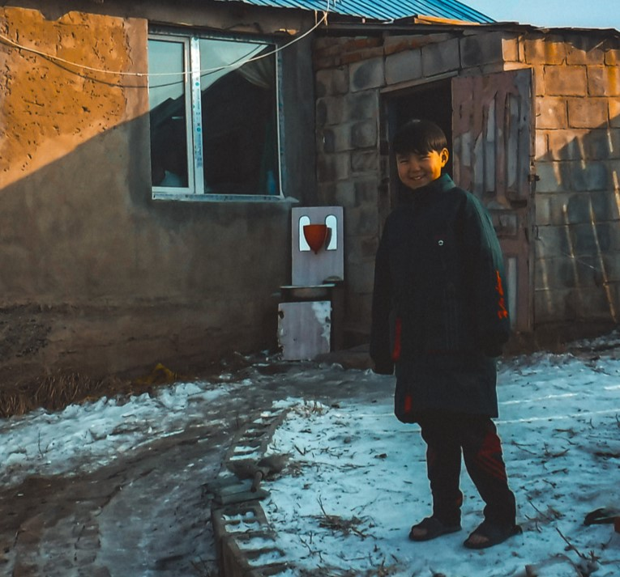

Holidays

Наадам – “Naadam” is a traditional festival celebrated in Mongolia, primarily known for its focus on
the "three manly games": horse racing, archery, and wrestling. The festival typically takes place in
July, and it holds significant cultural and historical importance in Mongolia, dating back centuries
to the time of the Mongol Empire. Naadam is not just a sporting event; it's also a celebration of
Mongolian identity, heritage, and nomadic lifestyle. The festival brings together people from all
over Mongolia, showcasing their skills in these traditional sports, along with cultural
performances, parades, and ceremonies.
цагаан сар – “Tsaagan Sar”, also known as "White Moon" or "White Month," marks the Mongolian Lunar
New Year. It usually falls in late January or early February, depending on the lunar calendar.
Tsaagan Sar is one of the most important holidays in Mongolia, celebrated with various rituals,
customs, and festivities. Families gather to pay respects to their elders, exchange gifts, and share
traditional foods. It's a time for renewal, as people bid farewell to the old year and welcome the
new one with hopes for prosperity, happiness, and good fortune. Tsaagan Sar is deeply rooted in
Mongolian culture and reflects the country's nomadic heritage, emphasizing the importance of family,
community, and tradition.
Битүүн - “Bituun”, also known as Bituun Tsagaan Sar or "Eve of White Moon," is an important part of
the Tsaagan Sar (Mongolian Lunar New Year) celebrations. Bituun is observed on the day preceding the
first day of the Lunar New Year, marking the end of the old year. It is a time for families to come
together, make final preparations for the new year, and bid farewell to the past year. During
Bituun, Mongolian families traditionally clean and decorate their homes meticulously. This cleaning
ritual symbolizes the purification of the household and the removal of any misfortunes or negative
energies from the previous year. It is believed that starting the new year with a clean and
organized home brings good luck and prosperity for the year ahead.
Шинэ жил – “New Years” New Year's Day, as celebrated according to the Gregorian calendar on January
1st, is observed much like in other parts of the world. While it doesn't hold the same level of
cultural and traditional significance as Tsaagan Sar, it is still recognized and celebrated,
especially in urban areas and among younger generations influenced by Western culture. On New Year's
Eve, many Mongolians participate in various festivities such as parties, concerts, and fireworks
displays. Families and friends often gather to celebrate together, enjoying special meals and
exchanging gifts. The atmosphere is festive, with streets adorned with decorations, lights, and
music adding to the celebratory ambiance.
Etiquette
Ёс - etiquette
Etiquette/Manners

Every country possesses its own unique culture, customs, traditions, and etiquette, and Mongolia is
certainly no exception. Deeply ingrained within Mongolian society is a rich tapestry of traditions
and customs that span back hundreds of years. By gaining a better understanding of what influences
the day-to-day actions of a country's people, you can develop a greater appreciation for that
nation, and in turn, they will value the time you spent preparing.
This section will focus on what I refer to as the "Do’s and Don’ts of Mongolian culture." This
information aims to enhance your etiquette skills and manners. Mongolians sometimes characterize
etiquette as the "unwritten law," signifying that it's something people practice without explicitly
discussing it. Armed with the knowledge of this "unwritten law," your efforts are likely to be
rewarded.
Word: Ёс Meaning: Etiquette
Don't point the sole of your foot at someone, touch the sole of your foot to another person's foot,
or tickle someone's foot. If you accidentally tap or step on someone's foot in public, on the bus,
or in a ger, ensure that you shake their hand and apologize. Alternatively, gently grabbing their
arm or patting them while apologizing works too if you're in a hurry. The reasoning behind this is
that you have invaded a person's social space, and you may have created negative feelings or energy.
If you do touch someone's foot, balance this out by shaking their hand to convey that it was
unintentional.
Books:
Don't place books, bags, or most objects on the ground. The ground is considered dirty, and if you
put your personal items on the ground, you might receive confused stares. Placing books on the
ground is frowned upon because books are a source of knowledge and are seen as almost sacred. Doing
so would be disrespectful, as it may be perceived as desecrating something sacred.
Bags:
Avoid placing any bags or personal belongings on the ground. This aligns with the etiquette related
to books, although not for the same respectful reasons, but simply because the ground is considered
dirty. Additionally, when leaving a home, avoid wearing your bag on your shoulder. Instead, hold it
at your side with your hand. Wearing your bag on your body when exiting a home may give the
impression that you could be stealing something, and people may find it inappropriate.
Gifts, Receiving things, Hands.
It is very polite to always grab everything that it's offered to you with two hands rather than one.
This can be applied when receiving food, drink, books, personal possessions, or gifts from someone.
To express respect when receiving something, reach out your right hand while supporting your right
elbow with your left hand or use both hands. Even if you're presented with something you may not
desire, it is anticipated that you accept it and, at the very least, feign an attempt to partake.
Rejecting or pushing away an offered item is considered a serious violation of etiquette.